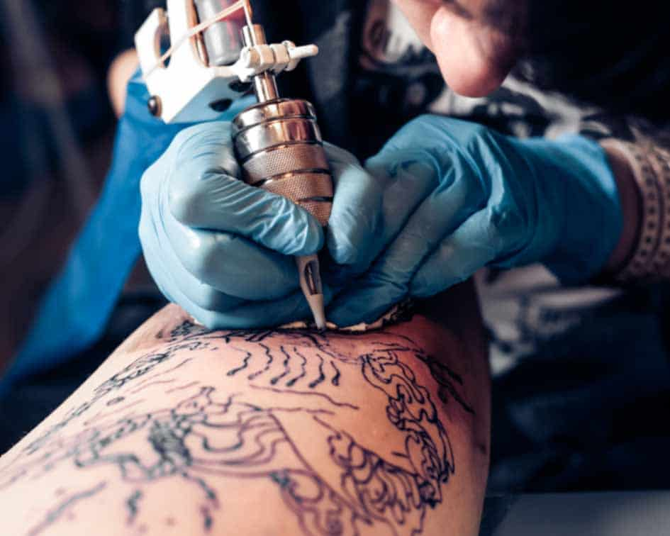

Um pouco mais sobre o Realism
A tatuagem realista ou “portrait” é uma das mais procuradas e mais prestigiadas entre o público amante da arte das agulhas. Mas, quem se dispõe a fazer uma tattoo realista precisa ter muita determinação, afinal, esse tipo de arte costuma ter uma aplicação mais demorada. O estilo de tatuagem realista se baseia no movimento realista que teve início na França em 1850. Os artistas e pintores daquela época tinham um foco na representação mais verdadeira e perfeita possivel da imagem. Para isso, os tons de romantismo e e ajustes para deixar a imagem mais dramática tinham que ser deixados de lado.
Com o passar do tempo e a evolução das técnicas e praticas de tatuar, a possibilidade de representar imagens realistas na pele se tornou possível. Por esse e outros motivos que é preciso encontrar um bom profissional que domine as técnicas da arte na pele. Dessa maneira, as chances do desenho sair perfeito são muito maiores.